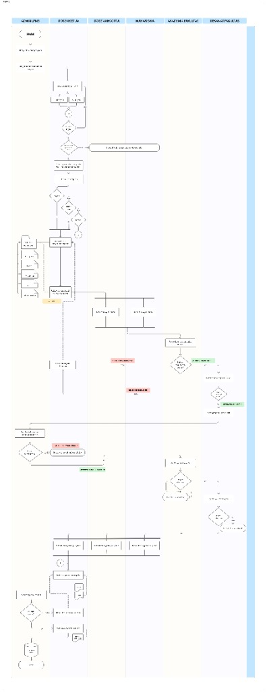

SIMPPM Portal: Sistem Manajemen Pengisian Pengabdian Masyarakat (PENGMAS) LPMB
Dokumentasi portfolio profesional dan detail analisis sistem.
1.1. Gambaran Perusahaan
Latar belakang bisnis tata kelola administrasi Pengabdian Masyarakat (PENGMAS) tingkat universitas.
LPMB Pengmas Workflow & Archiving Portal
Lembaga Pengabdian Masyarakat dan Bisnis (LPMB) memegang kendali penuh atas program pengabdian eksternal reguler, internal, dan mandiri. Portal SIMPPM dirancang untuk mendigitalisasi penanganan proposal, dokumen administrasi prasyarat (RAB, CV Ketua, SP, Pakta Integritas), koordinasi keanggotaan dosen-mahasiswa, hingga sistem pelaporan terarsip yang terintegrasi langsung dengan tabel basis data master WUADC.
Target Efisiensi
Under 5 Days
Siklus Verifikasi & Review
Memotong rantai birokrasi peninjauan kelengkapan berkas fisik dari Akademik & Dekanat Fakultas menjadi sistem online real-time.
1.2. Peran Operasional Sistem
Tanggung jawab masing-masing aktor pengguna dalam alur kerja SIMPPM LPMB.
| Aktor Peran | Tanggung Jawab Teknis | Kebutuhan Antarmuka Sistem |
|---|---|---|
| Admin LPMB | Mengelola skema pengmas, master dokumen prasyarat, melakukan verifikasi kesesuaian konten proposal, mengevaluasi laporan kemudahan/akhir, dan menyimpan data luaran ke tabel WUADC. | Panel konfigurasi skema, antrean verifikasi konten, panel audit log, dan dashboard monitoring monev. |
| Dosen Ketua | Melakukan login (SSO Cyber/Gmail), memilih skema (reguler, internal, mandiri), mengisi form pengajuan berkas, mengunggah proposal/RAB/CV/SP/Pakta, menandatangani persetujuan administratif, melakukan kegiatan, dan mengunggah laporan kemajuan/akhir/luaran. | Formulir pengajuan dinamis, modul upload file, status tracking proposal (Draft, Rejected, Approved), dan menu logbook pelaporan. |
| Dosen Anggota & Mahasiswa | Melihat riwayat usulan proyek pengmas di mana nama mereka didaftarkan, serta turut melaksanakan kegiatan pengmas secara paralel. | Halaman riwayat usulan khusus anggota dan dasbor pelacakan status kegiatan. |
| Akademik Fakultas | Melakukan review kelengkapan berkas administratif awal pasca-submit, serta melakukan review akhir tingkat fakultas jika lolos administrasi LPMB. | Daftar antrean verifikasi berkas fakultas, checklist kelengkapan berkas, dan modul penilaian akhir fakultas. |
| Dekanat Fakultas | Melakukan peninjauan proposal dan memberikan keputusan persetujuan rekomendasi, serta melakukan review akhir usulan tingkat dekanat. | Halaman tinjauan proposal fakultas, tombol keputusan setuju/tolak rekomendasi, dan panel review akhir. |
1.3. Analisis Sistem Lama & Tantangan Operasional
Kendala utama proses manual yang diselesaikan melalui implementasi portal SIMPPM.
Autentikasi Terpisah
Login dosen tidak terpusat, menyulitkan sinkronisasi profil pengusul antara cyber kampus dan server email gmail institusi.
Berkas Persyaratan Fisik
Pengumpulan dokumen proposal, RAB, CV, SP, dan Pakta Integritas dilakukan manual berbentuk kertas cetak atau attachment email acak.
Review Fakultatif Lambat
Staf akademik dan dekanat kesulitan memantau antrean berkas pengajuan karena alur verifikasi berjalan menggunakan dokumen fisik.
Arsip Laporan Terpencar
Logbook, laporan akhir, dan dokumen bukti luaran pengmas seringkali hilang karena tidak tersimpan otomatis ke database master WUADC.
2.1. BPMN Swimlane Alur Pengajuan & Evaluasi Proposal
Visualisasi alur proses bisnis lintas peran dari pembukaan periode hingga penandatanganan kontrak riset.

Model Digital Alur Kerja (Mermaid Flowchart)
2.2. Breakdown Detil Alur Kerja LPMB
Penjelasan langkah-langkah logis operasional lintas peran berdasarkan swimlane diagram.
Inisiasi & Konfigurasi Skema (Admin LPMB)
Admin LPMB menentukan skema pengabdian masyarakat (reguler, internal, mandiri) serta master dokumen prasyarat yang wajib dipenuhi oleh para pengusul.
Autentikasi & Pengajuan Usulan (Dosen Ketua)
Dosen Ketua masuk ke sistem melalui SSO Cyber Kampus atau Gmail. Setelah periode pendaftaran divalidasi aktif, dosen memilih skema dan mengisi form pengajuan dengan mengunggah proposal, RAB, CV, SP, serta Pakta Integritas.
Tinjauan Keanggotaan Paralel (Dosen Anggota & Mahasiswa)
Sistem secara otomatis menampilkan riwayat usulan kepada Dosen Anggota dan Mahasiswa secara paralel untuk transparansi keterlibatan tim pengmas.
Verifikasi Kelengkapan Awal (Akademik & Dekanat Fakultas)
Berkas diperiksa oleh Akademik Fakultas (Reject 3 jika tidak lengkap). Jika lengkap, Dekan me-review substansi awal (Reject 5 jika tidak disetujui). Apabila lolos persetujuan dekan, Dosen Ketua melengkapi tanda tangan administrasi berkas pengajuan.
Verifikasi Konten & Review Akhir Kelulusan (LPMB & Review Akhir)
Admin LPMB memverifikasi kesesuaian konten (Reject 7 ditolak). Berkas yang lolos akan melalui tinjauan akhir berjenjang oleh Akademik Fakultas dan Dekanat Fakultas untuk menetapkan status penerimaan akhir usulan.
Pelaksanaan & Laporan Akhir (Tim Pengmas & LPMB)
Tim pengmas (Ketua, Anggota, Mahasiswa) melaksanakan pengabdian masyarakat secara paralel. Setelah selesai, Dosen Ketua mengunggah Logbook dan Laporan ke portal untuk dimonitoring & dievaluasi oleh LPMB. Laporan yang disetujui akan diarsipkan otomatis ke tabel basis data master WUADC.
3.1. Business Requirements (BRD Overview)
Target bisnis utama dalam digitalisasi sistem manajemen pengabdian masyarakat LPMB.
BR-01: Sistem harus mendigitalisasi alur berkas lampiran prasyarat (proposal, RAB, CV, SP, pakta) dan mempercepat peninjauan fakultas dari mingguan menjadi harian.
BR-02: Sistem wajib mengarsipkan secara otomatis seluruh logbook kegiatan, laporan akhir, dan bukti luaran terintegrasi ke dalam tabel data master WUADC untuk kebutuhan pelaporan eksternal.
3.2. Functional Requirements
Spesifikasi fungsional portal pengajuan proposal SIMPPM LPMB.
| ID Kebutuhan | Deskripsi Spesifikasi Kebutuhan | Prasyarat Validasi (Trigger) | Prioritas |
|---|---|---|---|
| FR-01 | Sistem harus memvalidasi data user dan status kepegawaian pengusul melalui query terpadu ke API Cyber Kampus dan PDDIKTI saat login. | SSO Login Request | Critical |
| FR-02 | Sistem wajib memvalidasi kelengkapan berkas prasyarat sesuai jenis skema yang dipilih (reguler, internal, mandiri) sebelum memperbolehkan submit. | Submit Form Check | Critical |
| FR-03 | Sistem otomatis merekam log audit untuk setiap aksi keputusan review bertingkat (Reject/Approve Akademik, Dekanat, dan Admin LPMB). | Workflow Review Triggers | High |
3.3. Non-Functional Requirements
Persyaratan performa, keamanan, dan ketersediaan sistem portal.
Ketersediaan Sistem
Portal wajib memiliki uptime minimal 99.9% selama periode puncak pengiriman berkas.
Keamanan Berkas
Seluruh dokumen proposal, RAB, dan pakta integritas disimpan secara aman dengan otorisasi akses ketat berbasis peran.
Sinkronisasi Database
Laporan yang dinyatakan lulus monev wajib disinkronkan secara transaksional ke tabel master WUADC dengan kegagalan sinkronisasi 0%.
3.4. Acceptance Criteria (Gherkin Scenario)
Kriteria pengujian penerimaan sistem untuk pengunggahan dokumen prasyarat.
Scenario: Pengajuan Berkas Pengmas Tanpa Mengunggah RAB dan Pakta Integritas Given Dosen Ketua sedang mengisi formulir pengisian berkas pengmas And Dosen Ketua mengunggah berkas "t. proposal" dan "t. CV ketua" And Berkas "t. RAB" dan "pakta integritas" belum diunggah When Dosen Ketua melakukan klik tombol "Upload Berkas dan Submit" Then Sistem mengunci tombol submit dan memblokir pengiriman berkas And Menampilkan pesan kesalahan "Upload Berkas Gagal: Dokumen RAB dan Pakta Integritas wajib disertakan"
4.1. Activity Diagram
Alur logis aktivitas validasi dan seleksi proposal.
4.2. Sequence Diagram
Aliran pesan dalam runtime untuk persetujuan keanggotaan riset.
4.3. Entity Relationship Diagram (ERD Schema)
Struktur relasi database portal untuk mengelola siklus riset dan pengabdian.
5.1. API Documentation (RESTful Endpoints)
Endpoints krusial untuk membuat pengajuan baru dan melaporkan logbook kegiatan pengmas.
1. Endpoint:POST /api/v1/proposal
{
"judul": "Sosialisasi Digital Marketing untuk UMKM Batik Tradisional",
"skema_pengmas": "REGULER",
"anggota_dosen": ["0423108821"],
"anggota_mahasiswa": ["434231055"],
"file_proposal": "binary_content",
"file_rab": "binary_content",
"file_cv": "binary_content",
"file_sp": "binary_content",
"file_pakta": "binary_content"
}
2. Endpoint: POST /api/v1/proposal/{id}/logbook
{
"tanggal_kegiatan": "2026-06-04",
"uraian_kegiatan": "Pelaksanaan pelatihan pembuatan foto produk UMKM batik",
"progress_percentage": 45.0,
"file_lampiran": "binary_content"
}
5.2. Validation Rules (Logika Bisnis)
Pengecekan integritas data sebelum didorong ke database sistem.
| Aturan Validasi | Syarat Kriteria Sistem | Pesan Kesalahan (Error Code) |
|---|---|---|
| Cyber Kampus Account Check | Nomor NIDN/NIM wajib terdaftar aktif di server database PDDIKTI dan API Cyber. | USER_NOT_ACTIVE: Pengguna Tidak Aktif / Tidak Terdaftar |
| Mandatory Files Check | Dosen Ketua wajib menyertakan proposal, RAB, CV, SP, dan Pakta Integritas saat submit berkas. | MISSING_MANDATORY_DOCUMENTS: Dokumen Prasyarat Wajib Tidak Lengkap |
| Single Active Proposal | Dosen Ketua hanya boleh mengusulkan maksimal 1 proposal aktif dalam periode berjalan. | LIMIT_EXCEEDED: Batas Pengajuan Proposal Pengmas Terlampaui |
5.3. Role & RACI Access Control Matrix
Manajemen hak akses berdasarkan peran operasional pengguna akhir (RBAC).
| Fitur / Layanan | Dosen Ketua | Dosen Anggota / Mhs | Akademik | Dekan | Admin LPMB |
|---|---|---|---|---|---|
| Create & Edit Proposal | Full Access | - | - | - | Read |
| Review Awal & Ttd | Approve | Read | Approve | Approve | - |
| Verifikasi Konten | - | - | - | - | Full Access |
| Review & Evaluasi Laporan | Full Access | Read | Read | - | Approve |
| Save di WUADC | - | - | - | - | Full Access |
5.4. Exception Flow (SLA Escalation Mitigation)
Mitigasi keterlambatan peninjauan berkas kelayakan di tingkat fakultas.
Kebijakan Eskalasi SLA (3 Hari Kerja):
Apabila pihak Akademik Fakultas atau Dekanat tidak melakukan peninjauan/keputusan persetujuan dalam waktu 3 hari kerja sejak berkas di-submit oleh Dosen Ketua, sistem otomatis mengirimkan notifikasi eskalasi tingkat pimpinan fakultas. Notifikasi peringatan dikirimkan harian ke dashboard dekanat guna mencegah antrean usulan mandek.
6.1. UAT Test Plan
Uji kelayakan sistem untuk menguji validasi berkas dan sinkronisasi data master.
| ID Uji | Target Fitur Uji | Langkah Percobaan | Hasil yang Diharapkan | Status |
|---|---|---|---|---|
| UAT-L01 | Mandatory Files Check | Lakukan klik tombol submit saat salah satu dokumen RAB atau Pakta Integritas belum diunggah. | Sistem memblokir proses pengiriman berkas dan memunculkan tooltip peringatan. | Passed |
| UAT-L02 | WUADC Sync Integration | Selesaikan pengisian luaran akhir dosen ketua dan verifikasi sesuai oleh Admin LPMB. | Sistem secara otomatis menyimpan data arsip final ke dalam baris tabel basis data WUADC secara transaksional. | Passed |
6.2. Requirements Traceability Matrix (RTM)
Pemetaan dari kebutuhan fungsional hingga rencana kasus uji UAT.
| ID Kebutuhan Bisnis | ID Fungsional (FR) | Skenario Kasus Uji | Modul Evaluasi |
|---|---|---|---|
| BR-01 (Digitalisasi Berkas) | FR-02 (Submit Form Check) | UAT-L01 (Mandatory Files Check) | Submission & Validation Module |
| BR-02 (WUADC Archiving) | FR-03 (Workflow Review Triggers) | UAT-L02 (WUADC Sync Integration) | Monev & Archiving Module |
6.3. Risk Register
Potensi hambatan kelancaran rilis sistem dan rencana tindakan mitigasi.
| Deskripsi Risiko | Level Risiko | Dampak Operasional | Rencana Tindakan Mitigasi |
|---|---|---|---|
| Downtime API Cyber Kampus saat validasi dosen/mahasiswa | Sedang | Dosen ketua tidak dapat login atau melakukan query data anggota secara real-time. | Sediakan fallback mekanisme verifikasi manual berbasis NIDN/NIM jika koneksi API terputus. |
| Pemuatan berkas PDF/Gambar berukuran sangat besar | Tinggi | Server melambat akibat ratusan dosen secara serentak mengunggah lampiran proposal/RAB. | Gunakan throttling limit pada sisi upload buffer dan integrasikan penyimpanan media langsung ke cloud storage (AWS S3/Cloud Storage). |
7.1. Business Impact & ROI Metrics
Dampak riil transformasi digital terhadap efisiensi program pengmas LPMB.
SLA Peninjauan Berkas
-85%
Pangkas Birokrasi manual
Memangkas alur verifikasi berkas dari semula berminggu-minggu menjadi di bawah 3 hari kerja.
Integrasi Master Arsip
100%
WUADC Archiving Sync
Menjamin arsip pelaporan, logbook, dan berkas luaran pengmas tersimpan otomatis tanpa input ganda manual.
Paperless Savings
100%
Efisiensi Cetak Berkas
Menghilangkan pencetakan fisik seluruh berkas proposal, RAB, CV, SP, dan Pakta secara total.